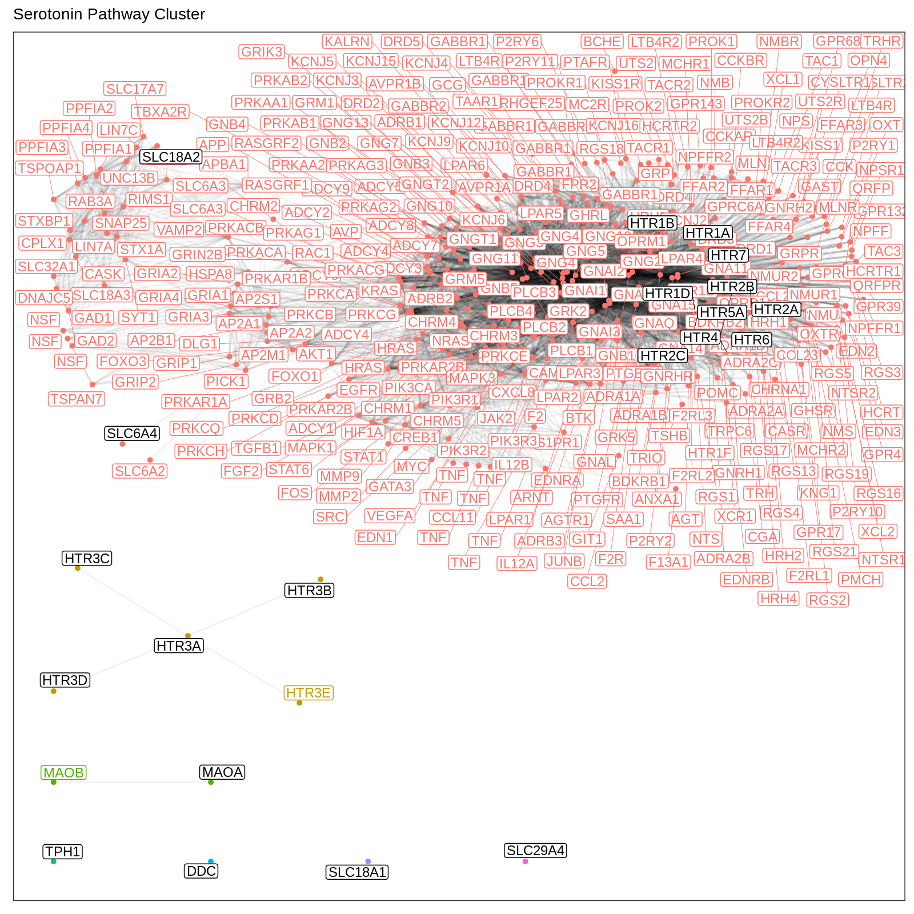
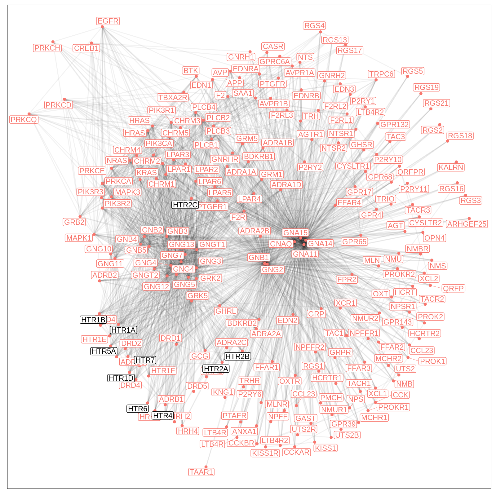

Start by loading pwcuratr and a collection of packages that facilitates data manipulation and plotting.
library(pwcuratr)
library(tidyverse)
#> ── Attaching packages ─────────────────────────────────────── tidyverse 1.3.0 ──
#> ✔ ggplot2 3.2.1 ✔ purrr 0.3.3
#> ✔ tibble 2.1.3 ✔ dplyr 0.8.4
#> ✔ tidyr 1.0.2 ✔ stringr 1.4.0
#> ✔ readr 1.3.1 ✔ forcats 0.4.0
#> ── Conflicts ────────────────────────────────────────── tidyverse_conflicts() ──
#> ✖ dplyr::filter() masks stats::filter()
#> ✖ dplyr::lag() masks stats::lag()
library(pander)The first step to curating a pathway cluster is to define a set of ‘seed genes’ that are of interest. This set could, e.g., be defined via an extensive literature review. The package pwcuratr comes with a set of genes associated with serotonin neurotransmitter pathways. The list of genes can be loaded via
seed_genes <- read_csv(
system.file("extdata/serotonin_seed_genes.csv", package="pwcuratr"),
col_types = c(ensembl_gene_id = col_character())
)$ensembl_gene_id
print(seed_genes)
#> [1] "ENSG00000129167" "ENSG00000132437" "ENSG00000178394" "ENSG00000135312"
#> [5] "ENSG00000179546" "ENSG00000102468" "ENSG00000135914" "ENSG00000147246"
#> [9] "ENSG00000166736" "ENSG00000149305" "ENSG00000178084" "ENSG00000186090"
#> [13] "ENSG00000164270" "ENSG00000157219" "ENSG00000158748" "ENSG00000148680"
#> [17] "ENSG00000189221" "ENSG00000036565" "ENSG00000165646" "ENSG00000108576"
#> [21] "ENSG00000164638"Next, external data is used to define a plausible functional neighborhood for genes that are functionally related to any of the seed genes. We start by querying a snapshot of the reactome.org pathway database for any pathways containing at least one of the seed genes.
tbl_reactome_pathways <- tibble(
reactome_pathway_id = query_reactome_pathways(seed_genes),
n_participating_genes = map_int(
reactome_pathway_id,
~length(query_participating_genes(.))
)
) %>%
arrange(n_participating_genes)
pander(tbl_reactome_pathways)| reactome_pathway_id | n_participating_genes |
|---|---|
| R-HSA-5579012 | 1 |
| R-HSA-141333 | 2 |
| R-HSA-379398 | 2 |
| R-HSA-380612 | 2 |
| R-HSA-380615 | 3 |
| R-HSA-379397 | 3 |
| R-HSA-209905 | 4 |
| R-HSA-140179 | 4 |
| R-HSA-209931 | 5 |
| R-HSA-379401 | 5 |
| R-HSA-112311 | 11 |
| R-HSA-390666 | 12 |
| R-HSA-83936 | 12 |
| R-HSA-209776 | 18 |
| R-HSA-181429 | 18 |
| R-HSA-181430 | 18 |
| R-HSA-442660 | 20 |
| R-HSA-212676 | 23 |
| R-HSA-5579029 | 42 |
| R-HSA-375280 | 43 |
| R-HSA-425397 | 44 |
| R-HSA-112310 | 51 |
| R-HSA-425366 | 100 |
| R-HSA-5668914 | 111 |
| R-HSA-211945 | 112 |
| R-HSA-6785807 | 123 |
| R-HSA-112314 | 220 |
| R-HSA-416476 | 223 |
| R-HSA-211859 | 233 |
| R-HSA-425407 | 269 |
| R-HSA-112315 | 287 |
| R-HSA-373076 | 347 |
| R-HSA-71291 | 412 |
| R-HSA-112316 | 438 |
| R-HSA-418594 | 458 |
| R-HSA-449147 | 512 |
| R-HSA-500792 | 513 |
| R-HSA-418555 | 656 |
| R-HSA-382551 | 806 |
| R-HSA-1280215 | 1024 |
| R-HSA-388396 | 1290 |
| R-HSA-1643685 | 1304 |
| R-HSA-372790 | 1370 |
| R-HSA-1430728 | 2291 |
| R-HSA-168256 | 2734 |
| R-HSA-162582 | 3105 |
A naive approach to defining a function neighborhood for the seed genes would be to take the union of all genes who are participating in any of the identified reactome pathways. However, reactome.org pathways are defined on very different levels of granularity and it will not always be sensible to include all participating genes from very large pathways. A first step to address this ‘specificity problem’ is to hand-curate the list of pathways to consider for further processing. Here, a completely arbitrary cut-off in terms of the pathway size of 250 participating genes is chosen. To avoid loosing any of the seed genes, they are added manually to the initial list of candidate genes.
candidate_genes <- c(
query_participating_genes(
tbl_reactome_pathways %>%
filter(n_participating_genes <= 250) %>%
pull(reactome_pathway_id)
),
seed_genes
) %>%
unique
length(candidate_genes)
#> [1] 1059To refine the candidate set of genes even further, predicted functional gene-gene interactions based on the 2018 release of the interactions derived in
Wu, G., Feng, X., & Stein, L. (2010). A human functional protein interaction network and its application to cancer data analysis. Genome biology, 11(5), R53.
are used. The set of interactions is scored between 0 (low confidence) and 1 (high confidence) for functional interaction between the respective genes.
tbl_reactome_interactions %>%
ggplot() +
aes(score) +
geom_histogram(binwidth = .01) +
ggtitle("Confidence score distribution for functional interactions") +
theme_bw()Clearly, the majority of included interactions has a confidence score of 0.9 or greater and we filter the set of interactions with this threshold. This results in a gene interaction network that can be used to refine our notion of functional neighborhood. We want to filter the set of candidate genes derived above such that only genes that are connected to a seed gene via at most \(k\) edges are retained.
tibble(
maxedgedistance = 0:10,
n_genes_pruned = map_int(
maxedgedistance,
~length(prune(
candidate_genes,
seed_genes,
minscore = .9,
maxedgedistance = .
))
)
) %>%
ggplot() +
aes(maxedgedistance, n_genes_pruned) +
geom_line() +
geom_point() +
scale_y_continuous(
"number of retained genes",
limits = c(0L, NA_integer_)
) +
scale_x_continuous("maximal edge distance", breaks = 0:10) +
ggtitle("Number of retained candiate genes by choice of maximal edge-distance (k)") +
theme_bw() +
theme(
panel.grid.minor = element_blank()
)The final choice of \(k\) can only be justified by manually inspecting the resulting gene-networks. As an example, consider the choice \(k=2\). We first prune the set of candidate genes and then create an igraph object to represent the network information. This allows us to use the wealth of graph-based techniques implemented in igraph package. For instance, one may be interested in the number of connected components of the pruned gene network.
candidate_genes <- prune(
candidate_genes,
seed_genes,
minscore = .9,
maxedgedistance = 2
)
gr <- as_igraph(candidate_genes, minscore = .9)
igraph::components(gr)$csize
#> [1] 360 5 2 1 1 1 1There are 7 components with almost all candidate genes connected in the first components and two small non-trivial components. All components of size 1 correspond to seed genes for which no functional neighbors in the selected reactome.org pathways where found.

Based on this visual representation, the neighborhood parameters could be tweaked or the set of initial reactome pathways could be altered. In the presence of non-connected components it might be worthwhile considering a split of the pathway cluster such that each individual network is fully connected.
For instance, one could consider the HTR subsystem separately by restricting the initial set of seed genes. Since the HTR3 subsystem is not connected, we can filter these seed genes out as well.
seed_genes_htr <- tbl_ensembl %>%
select(external_gene_name, ensembl_gene_id) %>%
distinct() %>%
filter(
ensembl_gene_id %in% seed_genes,
str_detect(external_gene_name, "HTR[^3]")
) %>%
pull(ensembl_gene_id) %>%
unique()
tbl_reactome_pathways_htr <- tibble(
reactome_pathway_id = query_reactome_pathways(seed_genes_htr),
n_participating_genes = map_int(
reactome_pathway_id,
~length(query_participating_genes(.))
)
) %>%
arrange(n_participating_genes)
candidate_genes_htr <- c(
query_participating_genes(
tbl_reactome_pathways_htr %>%
filter(n_participating_genes <= 250) %>%
pull(reactome_pathway_id)
),
seed_genes_htr
) %>%
unique %>%
prune(
seed_genes_htr,
minscore = .9,
maxedgedistance = 2
)
gr <- as_igraph(candidate_genes_htr, minscore = .9)
igraph::components(gr)$csize
#> [1] 216